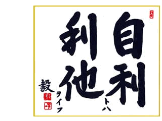
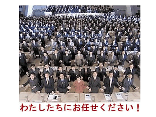

ABOUT US
私は税理士事務所を開設してから今日まで、多方面の顧問先のお客様と信頼の絆を築いていくことを重点においてきました。
税務、会計はもちろん他の些細なことでもお悩みごとがございましたらお気軽に当事務所までご相談下さい。プライバシーを守り、一生懸命お客様に満足していただくように努力させていただきます。
| 事務所名 | 後藤会計事務所 |
|---|---|
| 所在地 | 茨城県水戸市吉沼町679－1 |
| 電話番号 | 0292-24-2252 |
| FAX番号 | 0292-31-6845 |
| 業務内容 |
・税務・会計・決算に関する業務 ・独立、開業に関する業務 ・経営相談・経営コンサルティング |
PHILOSOPHY

ＴＫＣ全国会の基本理念である「自利利他」について、ＴＫＣ全国会創設者飯塚毅は次のように述べています。
大乗仏教の経論には「自利利他」の語が実に頻繁に登場する。解釈にも諸説がある。その中で私は「自利とは利他をいう」（最澄伝教大師伝）と解するのが最も正しいと信ずる。
仏教哲学の精髄は「相即の論理」である。般若心経は「色即是空」と説くが、それは「色」を滅して「空」に至るのではなく、「色そのままに空」であるという真理を表現している。
同様に「自利とは利他をいう」とは、「利他」のまっただ中で「自利」を覚知すること、すなわち「自利即利他」の意味である。他の説のごとく「自利と、利他と」といった並列の関係ではない。
そう解すれば自利の「自」は、単に想念としての自己を指すものではないことが分かるだろう。それは己の主体、すなわち主人公である。
また、利他の「他」もただ他者の意ではない。己の五体はもちろん、眼耳鼻舌身意の「意」さえ含む一切の客体をいう。
世のため人のため、つまり会計人なら、職員や関与先、社会のために精進努力の生活に徹すること、それがそのまま自利すなわち本当の自分の喜びであり幸福なのだ。
そのような心境に立ち至り、かかる本物の人物となって社会と大衆に奉仕することができれば、人は心からの生き甲斐を感じるはずである。
毎月、会計専門家が貴社を訪問し、次の業務を支援します。
1.貴社の永続的な繁栄のために、活力を生む経営革新を支援します。
2.毎期、黒字決算を実現する社内のメカニズムづくりを提案します。
3.地元の金融機関や得意先／仕入先からの信頼度アップに貢献します。
4.税務のプロフェッショナルとして法令に基づく的確なアドバイスをします。
5.ＩＴ経営革命をサポートします。
6.創業・ベンチャー起業・事業転換・株式公開を支援します。

SERVICES
原則、毎月1回訪問し、記帳指導をさせて頂きます。会計ソフトの導入を検討しておられる場合には、選定から操作指導に至るまで丁寧にアドバイスさせて頂きます。
現金出納帳、伝票、給与台帳などの資料をお客様の方で作成していただき、当社で会計ソフトへ入力し、仕訳日記帳、月次試算表、総勘定元帳、貸借対照表、損益計算書などの書類を作成いたします。
当方のスタッフもご一緒させていただき、本来支払うべき税金以上に請求されることがないよう、また、問題を指摘された場合の調整代行をいたします。
決算指導及び、税務署、都道府県、市町村提出用の各種申告書を作成いたします。